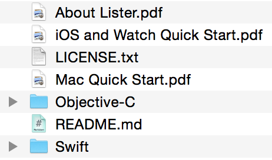
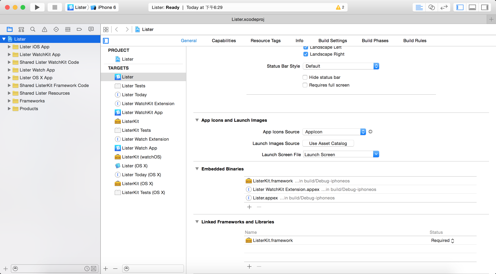
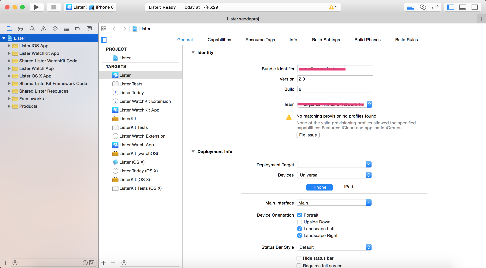
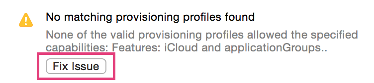
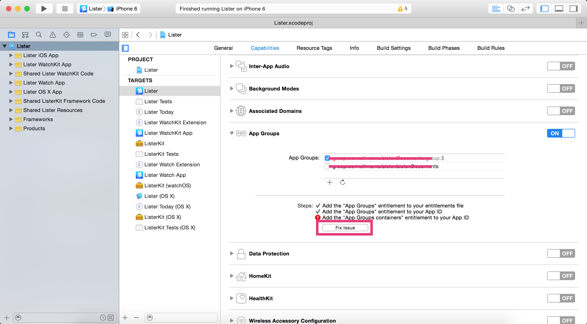
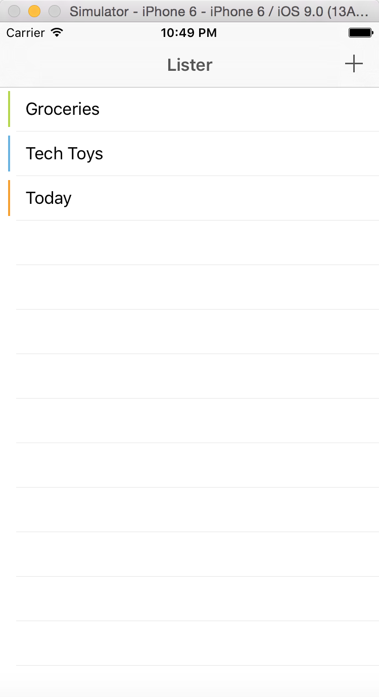
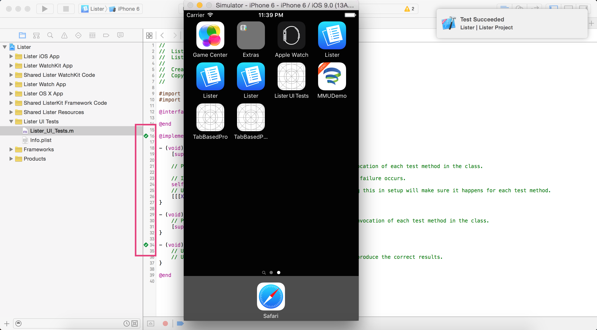

UI Testing In Xcode
UI Testing In Xcode Introducing
Apple provides a new UI testing method in WWDC this year. It based on XCTest and Accessibility that can be used on iOS, watchOS and OSX. Before it appears I use UI Automation and Appium sometimes. And now, I can try to play with the UI testing in a new way. It’s really exciting.
The new UI testing tool allows you to wirte the testing code in Xcode because the XCTest framework is integrated with Xcode. Different with writing JavaScript based on UI Automation in Instruments, the new method can make the testing code more unified with the project as it can be executed directly in Xcode almost like the Unit test. And a more wonderful thing is that it supports UI Recording. When you start UI Recording, it is synthesizing user events and generating code depending on your operating. The generated code needs less modify before it can run successfully. In this blog, I’ll share the process that I used UI Testing(all about iOS).
UI Testing Preparation
Testing Environments
- Xcode7
- iOS9 SDK
My development devices haven’t update to iOS9, so I use the simulator instead. If you use real device, there are other requirements as you can refer to the WWDC video or the keynote.
Example app
There is an example app providing by developer.apple.com, you can download it from here. After unzip it you can see a list of files in the folder as below.

Choose a project from objective-c or swift as you like, then open it with Xcode7.

According to the iOS and Watch Quick Start.pdf guide we must complete to set up the project before the Lister.app can run. Here are the steps:
setup the bundle identifier
Choose the project Lister ——> Building Settings and find the LISTER_BUNDLE_PREFIX, then modify it with your own developer account.
select development team for these targets
Lister
Lister Today
Lister WatchKit Extension
Lister WatchKit App
ListerKit

Create Provisioning Profiles for the below targets
Lister
Lister Today
Lister WatchKit Extension
Click Fix issue and Xcode will download a new provisioning profile for that target.

Now you are ready to build the Lister.app after you complete all these steps.
When I tried to build and run the app, there was an error happened which caused the app crash. The error message is: Terminating app due to uncaught exception 'NSInternalInconsistencyException', reason: 'The shared application group container is unavailable. Check your entitlements and provisioning profiles for this target. It shows that there is a mistake about application group container. You can choose the Lister target and find the App Groups in Capabilities, then fix issue. And then build and run the app again. It’s running successfully now.

It is the main interface of the Lister.app.

Now let’s have a try with the UI Testing.
UI Testing In Xcode
Add UI Testing Target
Then execute UI Testing from Lister_UI_Tests.m. Tab command+U then the testing cases will be executed. After testing completed the flag state should be changed as below.

UI Recording In Xcode
UI Recording In Xcode from Ying Zhao on Vimeo.
UI Testing试玩完毕，接下来接口相关的研究及case示例整理好会再发出来：-）